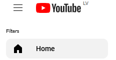
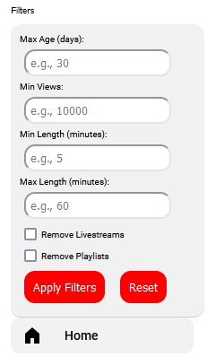

Navigate to YouTube where you'll find the new filter options in the sidebar.
Click on the "Filters" button to open the filter bar. Set your desired filters and click "Apply Filters" to see the changes.
If you want to reset the filters, click the "Reset" button to restore the original view.
If you have any questions, feel free to reach out!